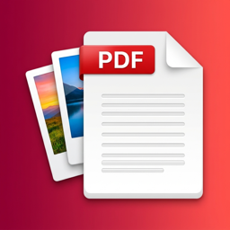

Turn photos into one PDF and make large PDFs smaller, on iPhone, iPad and Android. Everything happens on your device: no upload, no account and no ads.
On-device: Roll2PDF has no server and makes no network requests. Photos and PDFs you choose are processed on your iPhone, iPad or Android device and are never uploaded.
Roll2PDF ghép nhiều ảnh thành một file PDF và nén các file PDF quá lớn trên iPhone, iPad và Android. Mọi xử lý đều diễn ra trên máy: không tải lên, không cần tài khoản, không quảng cáo. Hỗ trợ: nguyenminhthuanvnn@gmail.com.